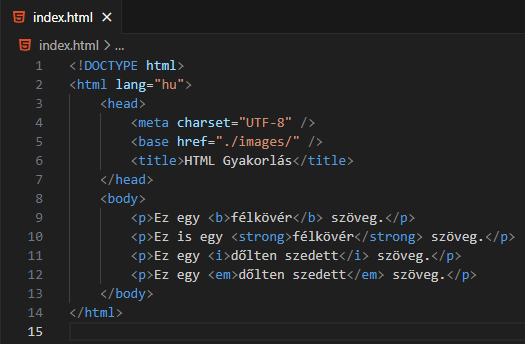
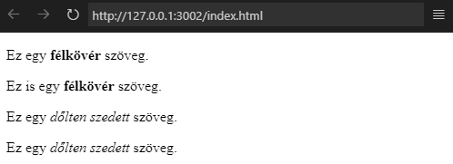

Mit lehet tudni a következő HTML elemekről: i, em?

A fenti kód eredménye.

Mind a kettő beágyazott elem.
Speciális jelentést adnak a szöveg egy részének.
Az i-elem dőlten szedett szöveget definiál.
Gyakran használják egy szakkifejezés, egy másik
nyelvből származó kifejezés, egy gondolat, egy
hajónév stb. jelzésére.
Az em-elem is félkövér, kiemelt (emphasized)
szöveget definiál. A képernyőolvasó (screen
reader) a szavakat hangsúllyal, verbális
hangsúlyozással ejti ki. A CSS-nél lesz
jelentősége!
A lorem-extension segítségével egy bekezdésben készítsünk
egy 100 szóból álló szöveget. Mind a 10 fenti elemet
felhasználva emeljük ki a szöveg egyes részeit!